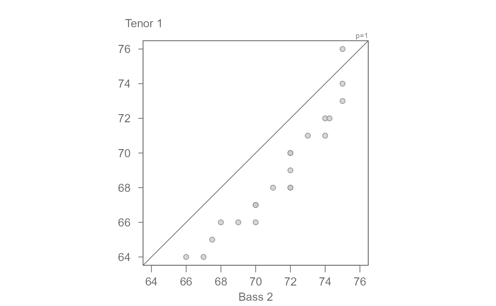
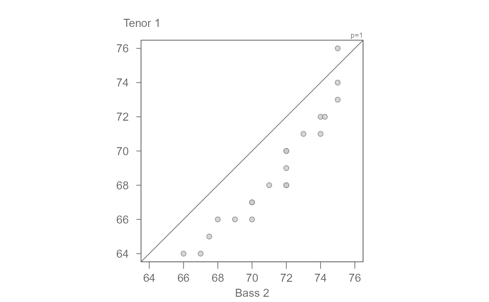

eda_qq generates an empirical QQ plot or a Tukey
mean-difference plot
Arguments
- x
Column assigned to the x axis.
- y
Column assigned to the y axis.
- p
Power transformation to apply to both sets of values.
- q.type
An integer between 1 and 9 selecting one of the nine quantile algorithms. (See
quantiletile function).- tukey
Boolean determining if a Tukey transformation should be adopted (FALSE adopts a Box-Cox transformation).
- md
Boolean determining if Tukey mean-difference plot should be generated.
- fx
Formula to apply to x variable. This is computed after any transformation is applied to the x variable.
- fy
Formula to apply to y variable. This is computed after any transformation is applied to the y variable.
- plot
Boolean determining if plot should be generated.
- grey
Grey level to apply to plot elements (0 to 1 with 1 = black).
- pch
Point symbol type.
- p.col
Color for point symbol.
- p.fill
Point fill color passed to
bg(Only used forpchranging from 21-25).- size
Point size (0-1)
- alpha
Point transparency (0 = transparent, 1 = opaque). Only applicable if
rgb()is not used to define point colors.- q
Boolean determining if grey quantile boxes should be plotted.
- b.val
Quantiles to define the quantile box parameters. Defaults to the IQR. Two values are needed.
- l.val
Quantiles to define the quantile line parameters. Defaults to the mid 75% of values. Two values are needed.
- xlab
X label for output plot
- ylab
Y label for output plot
- ...
Not used
Value
Returns a list with the following components:
x: X values. May be interpolated to smallest quantile batch. Values will reflect power transformation defined inp.b: Yvalues. May be interpolated to smallest quantile batch. Values will reflect power transformation defined inp.p: Re-expression applied to original values.fx: Formula applied to x variable.fy: Formula applied to y variable.
Details
The QQ plot will displays the IQR via grey boxes for both x and y
values. The box widths can be changed via the b.val argument. The plot
will also display the mid 75% of values via light colored dashed lines. The
line positions can be changed via the l.val argument. The middle
dashed line represents each batch's median value.
Examples
# Example 1: Comparing "Tenor 1" and "Bass 2" singer height values
singer <- lattice::singer
bass2 <- subset(singer, voice.part == "Bass 2", select = height, drop = TRUE )
tenor1 <- subset(singer, voice.part == "Tenor 1", select = height, drop = TRUE )
eda_qq(bass2, tenor1)
 # There seems to be an additive offset of about 2 inches
eda_qq(tenor1, bass2, fy = "y - 2")
# There seems to be an additive offset of about 2 inches
eda_qq(tenor1, bass2, fy = "y - 2")
 # We can fine-tune by generating the Tukey mean-difference plot
eda_qq(tenor1, bass2, fy = "y - 2", md = TRUE)

# An offset of another 0.5 inches seems warranted
# We can sat that overall, bass2 singers are 2.5 inches taller than tenor1.
# The offset is additive.
eda_qq(tenor1, bass2 , fy = "y - 2.5", md = TRUE)
# We can fine-tune by generating the Tukey mean-difference plot
eda_qq(tenor1, bass2, fy = "y - 2", md = TRUE)

# An offset of another 0.5 inches seems warranted
# We can sat that overall, bass2 singers are 2.5 inches taller than tenor1.
# The offset is additive.
eda_qq(tenor1, bass2 , fy = "y - 2.5", md = TRUE)
 # Example 2: Sepal width
setosa <- subset(iris, Species == "setosa", select = Petal.Width, drop = TRUE)
virginica <- subset(iris, Species == "virginica", select = Petal.Width, drop = TRUE)
eda_qq(setosa, virginica)
# Example 2: Sepal width
setosa <- subset(iris, Species == "setosa", select = Petal.Width, drop = TRUE)
virginica <- subset(iris, Species == "virginica", select = Petal.Width, drop = TRUE)
eda_qq(setosa, virginica)
 # The points are not completely parallel to the 1:1 line suggesting a
# multiplicative offset. Playing around with a multplier gives us a
# value of about 0.4
eda_qq(setosa, virginica, fy = "y * 0.4")
# The points are not completely parallel to the 1:1 line suggesting a
# multiplicative offset. Playing around with a multplier gives us a
# value of about 0.4
eda_qq(setosa, virginica, fy = "y * 0.4")
 # There is also an additive offset. Its values seems to be around
eda_qq(setosa, virginica, fy = "y * 0.4 - 0.56")
# There is also an additive offset. Its values seems to be around
eda_qq(setosa, virginica, fy = "y * 0.4 - 0.56")
 # We can confirm this value via the mean-difference plot
# Overall, we have both a multiplicative and additive offset between the
# species' petal widths.
eda_qq(setosa, virginica, fy = "y * 0.4 - 0.56", md = TRUE)
# We can confirm this value via the mean-difference plot
# Overall, we have both a multiplicative and additive offset between the
# species' petal widths.
eda_qq(setosa, virginica, fy = "y * 0.4 - 0.56", md = TRUE)